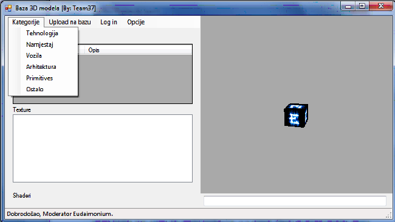

Klikom na padajuæi izbornik „Kategorije“ se otvara padajuæi izbornik koji sadrži popis
kategorija 3D modela koji se nalaze u bazi.

Klikom na odgovarajuæu kategoriju se otvara lista svih 3D modela odgovarajuæe kategorije
koji se nalaze u bazi.
U popisu „Modeli“ se navodi popis svih prisutnih modela. U stupcu „Naziv“ se nalazi kratko
ime onoga što model predstavlja, a u stupcu „Opis“ se nalaze vizualni detalji modela.
Odabirom nekog od ponuðenih modela se pokreæe operacija pripravljanja modela za prikaz
na 3D prozoru, te dohvaæanje njegovih tekstura koje su popisane u odjeljku oznaèenim sa
„Texture“. Taj popis sadrži mali „thumbnail“ stvarne teksture i njezino ime. Odabirom
teksture iz popisa možemo instantno vidjeti promjenu u 3D prozoru kako æe odabrani model
izgledati sa odabranom teksturom.
U 3D prozoru se kontinuirano vrti odabrani model da ga možemo vidjeti sa svih kutova pri
odabiru. Klikom na desnu tipku miša (i držanjem je kliknuotm) se dotièno okretanje može
zaustaviti